| Membre | Rôle principal |
|---|---|
| Asma BELLIL | à compléter |
| Ghaylene DRIDI | à compléter |
| Mohamed Yacine BRAHMIA | à compléter |
Le marché de l'emploi produit chaque jour un volume considérable d'offres publiées sur des plateformes de recrutement, des sites d'entreprises et des agrégateurs. Ces offres constituent une source de données riche : elles révèlent les compétences et technologies recherchées, la géographie des besoins, les niveaux d'expérience attendus, les types de contrat et, lorsqu'ils sont publiés, les niveaux de rémunération.
Exploiter ces données suppose toutefois de résoudre un problème d'ingénierie : les offres sont dispersées, publiées dans des formats hétérogènes (API JSON, pages HTML, sitemaps XML), dans plusieurs langues, avec une qualité très variable et de nombreux doublons d'une plateforme à l'autre.
Comment concevoir une plateforme Big Data capable de collecter automatiquement des offres d'emploi provenant de plusieurs sources, de traiter et normaliser ces données, puis de fournir des analyses pertinentes sur les tendances du marché de l'emploi ?
L'objectif principal est de couvrir l'ensemble du cycle de vie de la donnée :
Collecte → Ingestion → Stockage → Nettoyage → Transformation → Analyse → Visualisation
Objectifs fonctionnels : collecter des offres de plusieurs sources, les centraliser, détecter les doublons, nettoyer et normaliser, extraire les compétences et technologies, analyser les offres par localisation, secteur, expérience et salaire, identifier les tendances et restituer les résultats dans des tableaux de bord.
Objectifs techniques : collecte automatisée, pipeline fiable et rejouable, stockage adapté à l'historisation, traitements distribués, contrôles de qualité automatiques, architecture modulaire et conteneurisée, orchestration et supervision.
Le projet a suivi une démarche Agile en sprints courts (analyse et conception, collecte et ingestion, traitement et qualité, analyse, visualisation, IA, sécurité, stabilisation). Le livrable 1 a fixé le cadrage (périmètre, utilisateurs cibles, architecture fonctionnelle, modèle de données, KPIs, risques). Le présent rapport décrit la réalisation, organisée selon les grandes fonctions d'une plateforme de données : stocker, analyser, visualiser, sécuriser et exploiter l'intelligence artificielle.
| Membre | Périmètre |
|---|---|
| Membre 1 – Data Collection & Ingestion | sources, collecteurs, API / scraping, Kafka, gestion des erreurs |
| Membre 2 – Data Engineering & Processing | Data Lake, Spark, nettoyage, déduplication, MongoDB, Docker |
| Membre 3 – Data Analysis & Visualization | KPIs, API analytique, React, Power BI, IA |
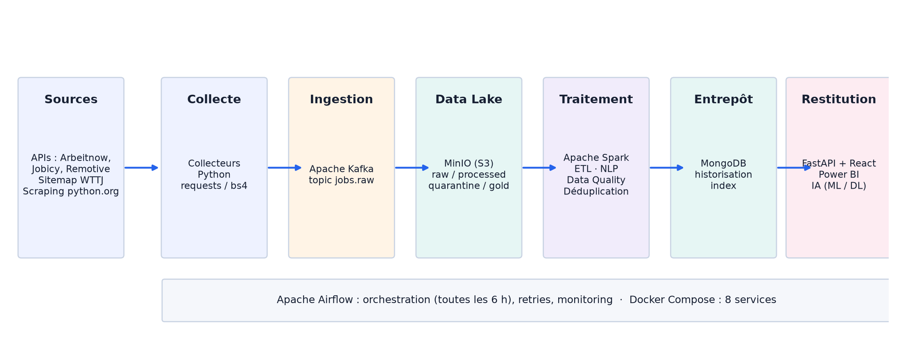
La plateforme est entièrement conteneurisée (8 services Docker) et orchestrée par Apache Airflow. Le tableau suivant relie chaque couche de l'architecture fonctionnelle du livrable 1 à la technologie retenue.
| Couche | Technologie | Rôle |
|---|---|---|
| Collecte | Python (requests, BeautifulSoup) |
API, sitemap et scraping autorisés |
| Ingestion | Apache Kafka 3.9 (KRaft) | tampon fiable, rejouable |
| Data Lake | MinIO (compatible S3) | zones raw / processed / quarantine / gold |
| Traitement | Apache Spark 3.5 (PySpark) | nettoyage, enrichissement, qualité, déduplication, KPIs |
| Entrepôt / service | MongoDB 7 | données consolidées, historisées, indexées |
| Orchestration | Apache Airflow 2.10 | planification, dépendances, retries, monitoring |
| API | FastAPI | accès sécurisé aux données et aux modèles |
| Visualisation | React 18 + Recharts, Power BI | application web, reporting analyste |
| IA | scikit-learn, Sentence-Transformers, PyTorch | classification, régression, clustering, recherche sémantique |
| Infrastructure | Docker Compose | déploiement reproductible |
État au 16/11/2026 : 6 297 offres consolidées, 1 226 entreprises, 30 pays, 96 technologies et 35 compétences distinctes extraites, 5 sources actives et 5 exécutions du pipeline enregistrées.
La première étape a consisté à identifier les sources et à vérifier leur accessibilité technique et légale, conformément au principe posé dans le livrable 1 : privilégier les API officielles et ne scraper que lorsque c'est autorisé. Pour chaque plateforme, nous avons analysé le fichier robots.txt, les conditions d'utilisation et le comportement réel des serveurs.
| Plateforme | Accès | Constat | Décision |
|---|---|---|---|
| Arbeitnow | API publique JSON | usage libre, lien de retour apprécié | retenue |
| Jobicy | API publique JSON | attribution et lien vers l'offre exigés ; salaires structurés | retenue |
| Remotive | API publique JSON | ≤ 4 appels / jour, attribution exigée | retenue (planification toutes les 6 h) |
| python.org/jobs | HTML | /jobs/ autorisé par robots.txt |
retenue (scraping) |
| Welcome to the Jungle | sitemap XML | pages de recherche interdites (*/jobs?query=*) ; sitemap des offres publié pour les robots ; fiches protégées (HTTP 403) |
retenue via le sitemap uniquement |
| — | robots.txt : « The use of robots or other automated means to access LinkedIn without the express permission of LinkedIn is strictly prohibited », Disallow: /jobs-guest/ |
écartée | |
| Indeed | — | protection anti-robot (HTTP 403), scraping interdit par les CGU, API éditeur fermée | écartée |
| Adzuna, France Travail | API officielles avec clé gratuite | accès contractuel | implémentées, activables |
Ce travail d'analyse est un résultat en soi : les plateformes les plus connues (LinkedIn, Indeed) interdisent explicitement la collecte automatisée. Contourner ces protections (usurpation de navigateur, rotation d'adresses IP, résolution de CAPTCHA) aurait exposé le projet à des risques juridiques et éthiques. Nous avons donc privilégié des sources ouvertes et une source française majeure, Welcome to the Jungle, exploitée dans le strict respect de son robots.txt. Les API Adzuna et France Travail, qui agrègent elles-mêmes de nombreux sites d'emploi, constituent l'alternative légale pour élargir la couverture.
Volume consolidé par source :
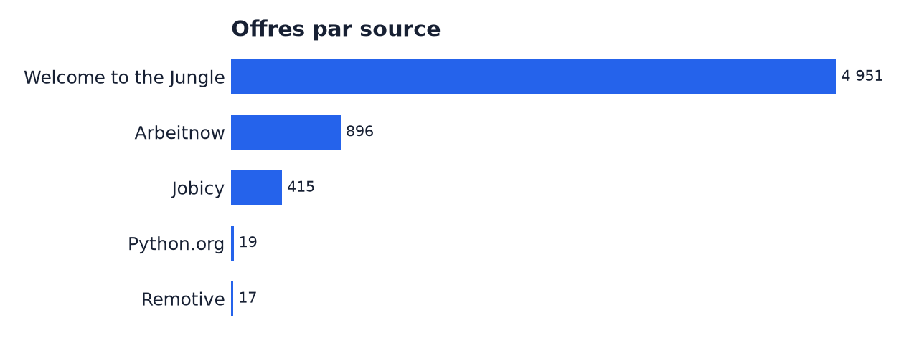
Chaque source est implémentée par une classe héritant de BaseCollector (architecture modulaire : ajouter une source revient à écrire une classe et une fonction de mapping). Chaque offre est encapsulée dans une enveloppe qui conserve la réponse d'origine intacte et ajoute les métadonnées de traçabilité :
{"source": "jobicy", "source_kind": "api", "source_id": "162628",
"run_id": "20261116T185238", "collected_at": "2026-11-16T18:52:41+00:00",
"payload": { "...": "réponse brute de l'API" }}
Fiabilité. Session HTTP avec retries exponentiels (codes 429 et 5xx, respect de Retry-After), délais d'attente systématiques, pause entre requêtes, dédoublonnage interne à chaque source, isolement des erreurs (une page ou une région en échec n'interrompt pas la collecte).
Scraping éthique. Le collecteur python.org vérifie robots.txt avant chaque URL (urllib.robotparser), s'identifie par un User-Agent explicite, limite son débit et supprime la section « Contact » des fiches avant stockage (minimisation des données personnelles). Le collecteur Welcome to the Jungle lit uniquement le sitemap XML : l'URL de chaque offre encode l'entreprise, l'intitulé et la ville (/fr/companies/<entreprise>/jobs/<intitulé>_<ville>), et la balise <lastmod> donne sa date de mise à jour. Une fenêtre glissante (7 jours) et un plafond par exécution limitent la charge.
Les collecteurs publient les enveloppes dans le topic jobs.raw (3 partitions, rétention 7 jours). La clé de message source:identifiant garantit qu'une même offre arrive toujours dans la même partition.
| Garantie | Mise en œuvre |
|---|---|
| Pas de perte | producteur acks=all, commit des offsets après écriture dans le Data Lake (at-least-once) |
| Pas de doublon côté producteur | enable.idempotence=true |
| Rejeu | rétention de 7 jours, relecture possible depuis un offset |
| Découplage | la collecte fonctionne même si le stockage est indisponible |
| Évolutivité | passage au streaming sans modifier les collecteurs |
Un consommateur batch lit le topic jusqu'à épuisement, regroupe les messages par source et écrit un fichier par source et par lot dans la zone brute du Data Lake.
Le Data Lake suit une organisation en zones (architecture « médaillon ») :
datalake/ (bucket versionné)
├── raw/<source>/<AAAA-MM-JJ>/batch_<lot>.jsonl bronze : données brutes, immuables
├── processed/jobs/<AAAA-MM-JJ>/<lot>/*.parquet silver : nettoyées, enrichies, dédupliquées
├── quarantine/<AAAA-MM-JJ>/<lot>/*.parquet données non conformes
├── gold/<lot>/<indicateur>/*.parquet gold : agrégats analytiques
└── reports/quality/<lot>.json rapports de qualité
Conserver le brut garantit la reproductibilité (une règle de nettoyage modifiée peut être rejouée sur tout l'historique), l'audit et l'historisation. Les zones traitées utilisent le format colonnaire Parquet (compressé, typé, lisible par Spark, pandas et Power BI). Le bucket est versionné.
MongoDB constitue la couche processed / warehouse et la base de l'application. Son schéma flexible convient aux offres hétérogènes (tableaux de compétences, salaires optionnels) et ses agrégations alimentent les KPIs en temps réel.
| Collection | Contenu |
|---|---|
jobs |
offres consolidées (modèle de données du livrable 1, enrichi) |
quality_reports, pipeline_runs |
supervision du pipeline |
kpi_snapshots |
historique des indicateurs globaux |
ml_runs, ml_clusters, job_embeddings |
intelligence artificielle |
users, audit_logs |
sécurité |
Le chargement est idempotent : chaque offre est insérée ou mise à jour (upsert) sur sa clé de déduplication, avec first_seen_at (première détection), last_seen_at, un compteur d'apparitions et la liste cumulée des sources. Relancer un lot ne crée donc jamais de doublon. Des index couvrent tous les filtres du tableau de bord ainsi qu'une recherche plein texte pondérée (titre, entreprise, description).
Les huit services (PostgreSQL pour Airflow, Airflow avec Spark, Kafka, MinIO, MongoDB, API, front, interface Kafka optionnelle) sont décrits dans un unique fichier docker-compose.yml : volumes persistants, healthchecks, dépendances conditionnelles et limites mémoire permettant de faire tourner la plateforme sur un poste de 8 Go.
Le DAG jobinsight_pipeline s'exécute toutes les six heures :
collect_<source> (7 tâches en parallèle)
└─► ingest_to_datalake ─► spark_etl_quality ─► load_mongodb
─► ml_enrich_industry ─► spark_analytics_kpis ─► refresh_semantic_index
Chaque tâche dispose de deux nouvelles tentatives avec temporisation exponentielle et d'un délai maximal. L'ingestion utilise la règle ALL_DONE : une source en panne n'empêche pas le traitement des autres (cas rencontré lors de la mise en production avec le collecteur python.org). L'identifiant de lot (horodatage d'exécution) rend chaque exécution rejouable. Chaque tâche écrit ses statistiques dans MongoDB, visibles dans la page « Pipeline & qualité ». Un second DAG, jobinsight_ml, ré-entraîne les modèles chaque semaine.
Le job Spark lit les fichiers bruts du lot, applique la transformation à chaque offre en parallèle, construit un DataFrame typé (35 colonnes), sépare les offres valides de la quarantaine, déduplique, écrit le Parquet et produit le rapport qualité.
| Étape | Exemples de règles |
|---|---|
| Standardisation | 7 formats de source ramenés à un schéma commun |
| Nettoyage du texte | suppression du HTML et des caractères de contrôle, décodage des entités, espaces uniformisés, masquage des e-mails et téléphones |
| Dates | horodatage Unix, ISO 8601 → AAAA-MM-JJ |
| Contrat | « Unbefristeter Arbeitsvertrag », « CDI », « Full-time permanent » → temps plein ; « CDD », « fixed term » → temporaire ; « Stage », « Alternance » détectés dans l'intitulé |
| Expérience | « Senior », « berufserfahren », « 5+ years of experience » → niveau normalisé |
| Géographie | « 75 - Paris 15e » → Paris, France ; « Berlin » → Allemagne ; détection du télétravail |
| Salaire | « $3.5k–$5k/month » → 3 500–5 000 USD mensuels → annualisé en euros ; valeurs aberrantes rejetées |
| Compétences (NLP) | taxonomie de ~110 technologies et ~35 compétences, en français, anglais et allemand |
| Secteur | 12 familles de métiers ; secteur manquant prédit par le modèle de machine learning |
Les règles métier sont des fonctions Python pures, couvertes par 42 tests unitaires et indépendantes de Spark ; Spark apporte la parallélisation, le typage, les fonctions de fenêtrage, les agrégations SQL et l'écriture Parquet. Le même job s'exécute sur un cluster en changeant uniquement l'adresse du master.
Plusieurs erreurs de normalisation ont été détectées en confrontant les règles aux données réelles puis corrigées et couvertes par des tests : le mot « Internet » reconnu comme un stage (intern), « unbefristet » (CDI en allemand) classé en contrat temporaire, ou « North America » associé aux États-Unis.
| Dimension | Contrôles | Traitement |
|---|---|---|
| Complétude | titre, entreprise, URL (bloquants) ; description, localisation (avertissements) | quarantaine / rapport |
| Validité | salaire min ≤ max, URL valide, date valide et non future | quarantaine |
| Unicité | job_id et clé de déduplication uniques après traitement |
contrôle global |
| Fraîcheur | publication de plus de 90 jours | avertissement |
| Cohérence | pays déduit de la ville ≠ pays annoncé | avertissement |
Les offres non conformes sont dirigées vers la zone quarantaine, sans bloquer le pipeline. Rapports des derniers lots :
| Lot | Offres brutes | Valides | Quarantaine | Doublons supprimés | Offres traitées | Complétude moyenne |
|---|---|---|---|---|---|---|
| 20261116T185238 | 6 321 | 6 321 | 0 | 72 | 6 249 | 59 % |
| 20261116T120000 | 1 316 | 1 316 | 0 | 21 | 1 295 | 80 % |
| 20261116T175546 | 1 316 | 1 316 | 0 | 21 | 1 295 | 80 % |
| 20261116T060000 | 1 332 | 1 332 | 0 | 63 | 1 269 | 80 % |
Le dernier lot, qui intègre pour la première fois Welcome to the Jungle, compte 5 000 avertissements « description absente » : c'est la conséquence attendue de la collecte par sitemap (sans accès aux fiches). Le taux de complétude global de l'entrepôt est le suivant :
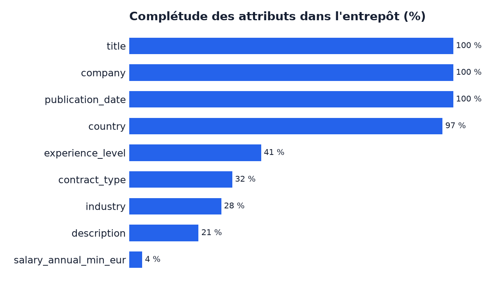
Une même offre pouvant apparaître sur plusieurs plateformes ou plusieurs fois dans une même source, la déduplication opère à trois niveaux :
SHA-1(entreprise | intitulé | ville) après normalisation (casse, accents, ponctuation, mentions « (H/F) » / « (m/w/d) », formes juridiques « GmbH », « SAS »…) ; une fonction de fenêtrage conserve la version la plus complète puis la plus récente ;first_seen_at / last_seen_at.Sur le dernier lot, 72 doublons ont été éliminés pour 6 321 offres brutes.
Les KPIs sont calculés de deux façons complémentaires : par Spark SQL à chaque exécution (zone gold et exports Power BI) et par agrégations MongoDB à la demande (API, filtres interactifs).
Volume et géographie. L'entrepôt contient 6 297 offres de 1 226 entreprises dans 30 pays. La France domine (4 973 offres) du fait de l'intégration de Welcome to the Jungle, suivie de l'Allemagne (Arbeitnow). Paris concentre 778 offres. 8,4 % des offres mentionnent le télétravail.
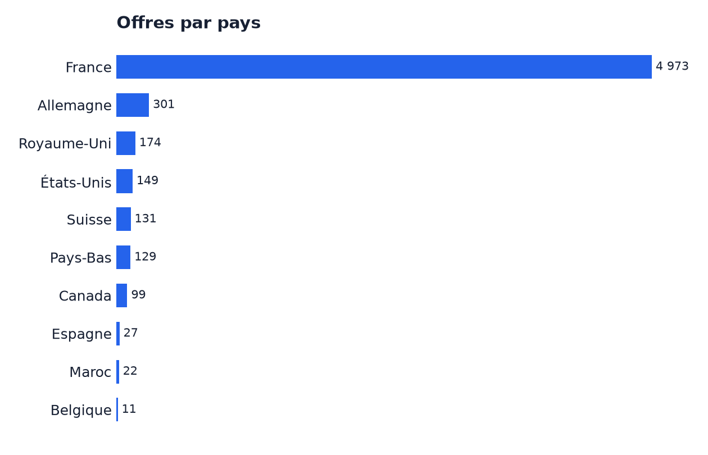
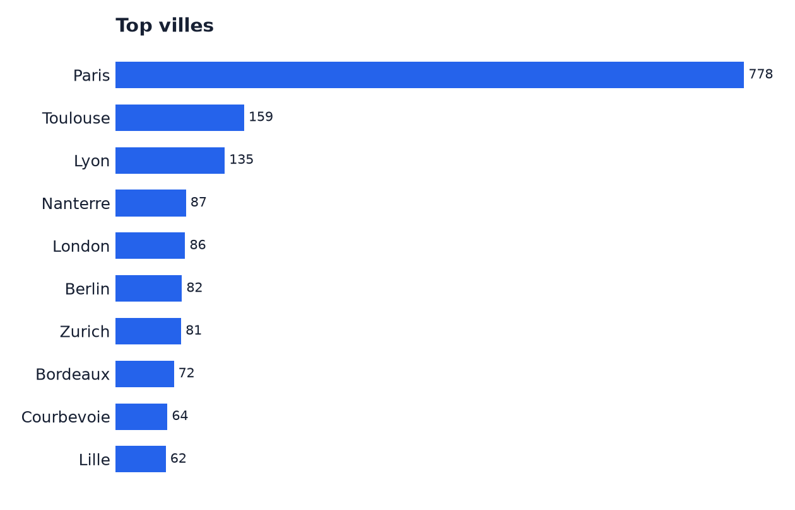
Technologies et compétences. Les technologies les plus demandées sont : Python (229), OpenAI / LLM APIs (192), SQL (127), AWS (120), CI/CD (104), Salesforce (102), Java (100), Kubernetes (97). La forte présence des API de modèles de langage (OpenAI, LLM) illustre l'effet de l'IA générative sur les offres techniques. Côté compétences comportementales, la communication, le travail en équipe et l'adaptabilité dominent ; l'anglais reste la langue la plus exigée.
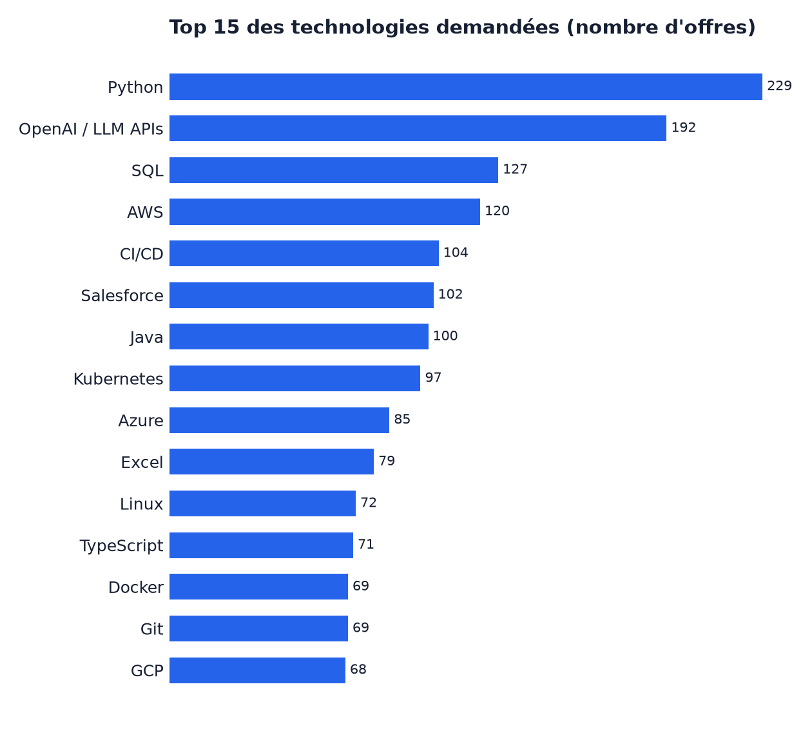
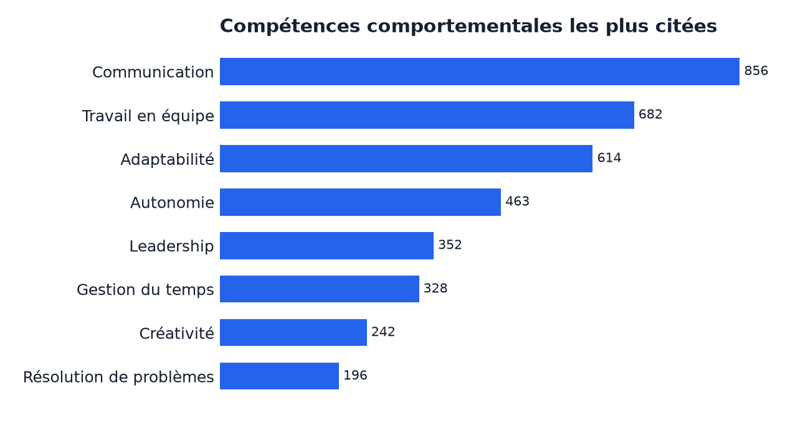
Contrats, secteurs et salaires. Les types de contrat explicitement identifiables se répartissent ainsi (les offres « non renseignées » sont celles dont le contrat n'apparaît ni dans l'intitulé ni dans les métadonnées) :
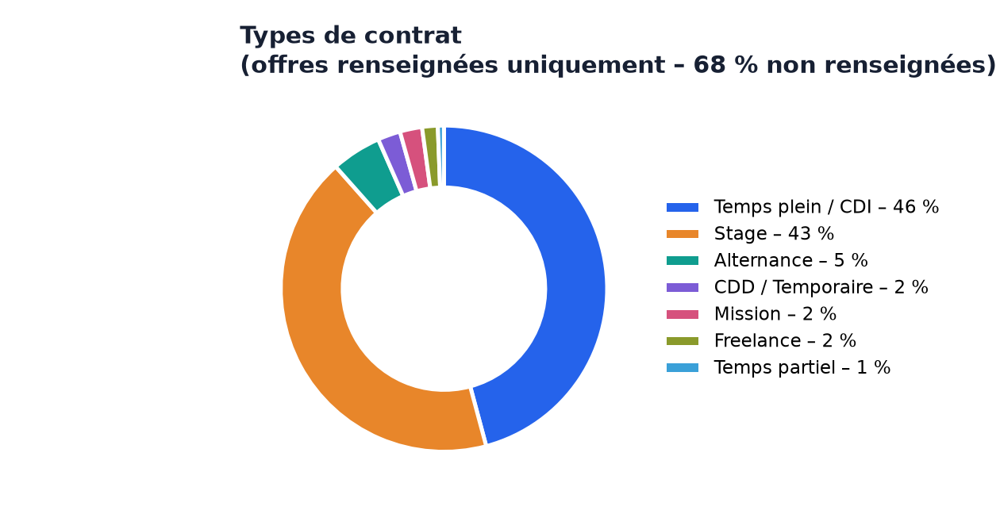
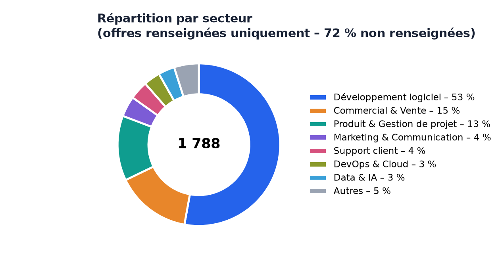
Seules 249 offres (4,0 %) publient un salaire exploitable – risque identifié dès le livrable 1. Sur cet échantillon, majoritairement composé d'offres internationales en télétravail, le salaire annuel moyen atteint 126 481 € ; il progresse nettement avec le niveau d'expérience :
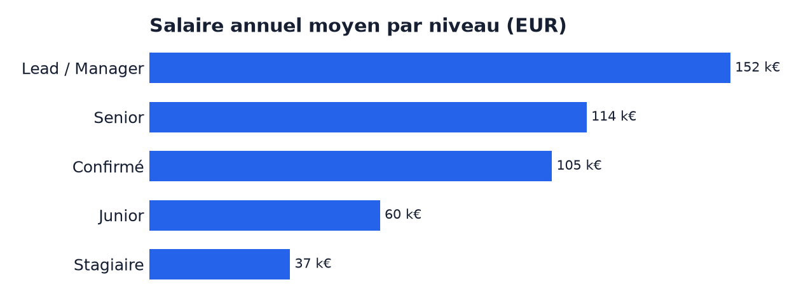
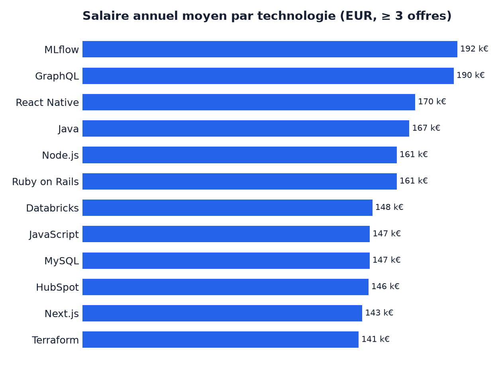
Ces chiffres décrivent l'échantillon collecté et non l'ensemble du marché : les sources internationales en télétravail (Jobicy, Remotive) sont celles qui publient le plus de salaires, souvent en dollars américains.
L'application, développée en React 18 (Vite, React Router, Recharts) et servie par nginx, reprend la maquette du livrable 1. Elle s'appuie exclusivement sur l'API FastAPI.
| Page | Contenu |
|---|---|
| Connexion | authentification, inscription, politique de mot de passe |
| Tableau de bord | cartes KPI, évolution des offres (jour / semaine / mois), répartition par secteur, top technologies, offres par pays, dernières offres |
| Offres d'emploi | recherche plein texte, 8 filtres, tri, pagination, fiche détaillée avec lien vers l'offre originale et mention de la source |
| Analyses | contrats, expérience, villes, sources, salaires |
| Compétences | technologies (top 25, par catégorie), compétences techniques, comportementales et linguistiques, tendances |
| IA & matching | matching CV, recherche sémantique, estimation de salaire, classification, métriques des modèles |
| Pipeline & qualité | exécutions, rapports qualité, complétude, utilisateurs et journal d'audit (administrateurs) |
Un filtre global (pays, période) s'applique à toutes les pages. Les choix de visualisation suivent des règles simples : une couleur unique pour une série unique, une palette catégorielle d'ordre fixe et une légende pour les séries multiples, regroupement en « Autres » au-delà de sept catégories, info-bulles sur tous les graphiques, aucun double axe, thème sombre automatique.
[Captures d'écran à insérer : tableau de bord, liste des offres avec fiche détaillée, page Compétences, page IA (matching CV), page Pipeline & qualité.]
L'API expose une trentaine de routes documentées automatiquement (OpenAPI / Swagger) : authentification, offres, indicateurs (/analytics/overview, /timeline, /top-technologies, /breakdown/{dimension}, /salaries…), intelligence artificielle et administration. Tous les endpoints analytiques acceptent les mêmes filtres que la liste des offres. La vue d'ensemble calcule huit indicateurs en une seule requête MongoDB ($facet).
Pour les analystes, la tâche spark_analytics_kpis exporte à chaque exécution un modèle en étoile au format CSV : une table de faits fact_jobs, deux tables de liaison (offre ↔ technologie, offre ↔ compétence), deux dimensions et une dizaine d'agrégats déjà calculés. Le rapport Power BI comporte une table calendrier, des mesures DAX (nombre d'offres, salaire médian, part de télétravail, évolution sur 30 jours…) et trois pages : vue d'ensemble, compétences et technologies, salaires et contrats.
Nb offres = DISTINCTCOUNT ( fact_jobs[dedup_key] )
Salaire médian (€) = MEDIANX ( FILTER ( fact_jobs, NOT ISBLANK ( fact_jobs[salary_mid_eur] ) ),
fact_jobs[salary_mid_eur] )
[Captures à insérer : vue Modèle de Power BI et pages du rapport.]
La sécurité a été traitée selon une logique de défense en profondeur : chaque couche est protégée indépendamment.
| Menace | Mesure |
|---|---|
| Vol de base de données | mots de passe hachés avec bcrypt (sel aléatoire, coût 12) |
| Mots de passe faibles | au moins 8 caractères, une lettre et un chiffre |
| Usurpation de session | jetons JWT signés (HS256), expiration à 2 h, émetteur vérifié ; jeton falsifié rejeté |
| Élévation de privilèges | contrôle d'accès par rôle (viewer, analyst, admin) |
| Énumération de comptes | message d'erreur identique pour un e-mail inconnu et un mauvais mot de passe |
| Force brute / abus | limitation de débit : 10 connexions / min, 5 inscriptions / min, 15 à 30 appels IA / min |
| Appels inter-services | jeton de service comparé en temps constant (Airflow → API) |
| Non-traçabilité | journal d'audit : connexions réussies et échouées, changements de rôle, usage du matching CV |
Tous les paramètres sont validés (types, longueurs, bornes, expressions régulières). Aucun objet fourni par l'utilisateur n'est transmis tel quel à MongoDB et le texte libre est échappé : une tentative d'injection NoSQL ({"$ne": null}) est traitée comme une simple chaîne – cas couvert par un test automatisé. Les erreurs internes renvoient un message générique, sans trace d'exécution. L'API et nginx ajoutent les en-têtes de sécurité (Content-Security-Policy, X-Frame-Options: DENY, X-Content-Type-Options, Referrer-Policy, Permissions-Policy) ; le CORS est limité aux origines du front et l'API est servie sous le même domaine. Les descriptions d'offres sont affichées comme du texte brut, ce qui écarte les injections de script.
.env généré aléatoirement et exclu de Git ; chaque conteneur ne reçoit que ses propres variables.| Principe (RGPD) | Mise en œuvre |
|---|---|
| Minimisation | seules des offres publiques sont collectées ; section « Contact » retirée au scraping ; e-mails et téléphones masqués |
| Limitation de la conservation | rétention Kafka de 7 jours ; CV du matching traité en mémoire, jamais stocké |
| Sécurité des comptes | bcrypt, JWT, journal d'audit |
Le respect des conditions d'utilisation des sources relève du même souci : vérification de robots.txt, débit limité, User-Agent identifié, attribution et lien vers l'offre originale (exigés par Remotive et Jobicy), refus de contourner les protections de LinkedIn, d'Indeed et des fiches Welcome to the Jungle.
Huit tests automatisés de l'API couvrent ces mesures (route protégée → 401, rôle insuffisant → 403, jeton modifié, mot de passe faible, hachage, injection NoSQL, en-têtes, jeton de service), complétés par un test de bout en bout sur la plateforme déployée (14 contrôles, tous valides).
Pour une mise en production : HTTPS et HSTS (déjà préparés dans la configuration nginx), gestionnaire de secrets, rotation des clés, authentification multi-facteurs pour les administrateurs, chiffrement de Kafka (SASL/TLS) et sauvegardes chiffrées.
L'IA intervient à deux niveaux : enrichir les données (secteur manquant, familles de métiers) et offrir de nouveaux usages (recherche par le sens, matching CV, estimation de salaire).
| Tâche | Type | Modèle |
|---|---|---|
| Secteur d'une offre | classification supervisée (NLP) | TF-IDF + 3 algorithmes comparés |
| Salaire annuel | régression | baseline, Ridge, Random Forest |
| Familles de métiers | clustering non supervisé | TF-IDF → SVD → K-Means |
| Recherche sémantique | deep learning | Transformer multilingue |
| Matching CV ↔ offres | deep learning + règles | embeddings + recouvrement des technologies |
| Secteur (variante) | deep learning | réseau de neurones PyTorch sur embeddings |
Les modèles classiques sont entraînés par Airflow chaque semaine ; les modèles profonds sont servis par l'API. Chaque entraînement est historisé (ml_runs) et affiché dans l'application.
Certaines sources (Arbeitnow, Welcome to the Jungle) ne fournissent pas de secteur. Le modèle apprend sur les offres dont le secteur est connu (Jobicy, Remotive, python.org), puis prédit celui des autres. Le texte (intitulé pondéré, tags, technologies, début de description) est vectorisé par TF-IDF (unigrammes et bigrammes) ; trois classifieurs sont comparés sur un jeu de test stratifié de 20 %, avec la macro-F1 comme métrique principale car les classes sont déséquilibrées.
| Modèle | Accuracy | Macro-F1 | F1 pondéré |
|---|---|---|---|
| Régression logistique (retenu) | 0.52 | 0.35 | 0.50 |
| SVM linéaire (calibré) | 0.52 | 0.31 | 0.47 |
| Complement Naive Bayes | 0.45 | 0.25 | 0.41 |
352 offres d'apprentissage, 88 de test, 11 classes.
Le meilleur modèle a attribué un secteur à 1 342 offres. Il n'en classe pas davantage par choix : sous un seuil de confiance de 0,35, l'offre reste « non classée ». Ce comportement est volontaire : les secteurs d'apprentissage proviennent de plateformes orientées technologie, alors que Welcome to the Jungle couvre tous les métiers (commerce, industrie, santé) ; forcer une prédiction produirait des erreurs. Enrichir le référentiel de secteurs constitue une perspective naturelle.
La cible est le logarithme du salaire annuel médian (en euros) ; les variables sont l'intitulé (TF-IDF), les technologies, le niveau d'expérience, le pays, le contrat, le télétravail et le secteur.
| Modèle | Erreur absolue moyenne | R² |
|---|---|---|
| Référence (médiane) | 57 100 € | 0.00 |
| Régression Ridge | 51 516 € | 0.23 |
| Random Forest (retenu) | 48 285 € | 0.29 |
199 offres d'apprentissage, 50 de test.
Le modèle retenu réduit l'erreur par rapport à la référence naïve, mais reste indicatif : peu d'offres publient un salaire. L'application présente donc toujours l'estimation avec un intervalle égal à l'erreur moyenne.
Les intitulés et technologies sont vectorisés (TF-IDF), réduits à 100 dimensions par analyse sémantique latente (SVD tronquée) puis regroupés par K-Means ; le nombre de groupes est choisi par le score de silhouette (14 groupes, silhouette 0,14). Principales familles identifiées :
La silhouette modérée reflète la nature continue du marché (les métiers se recouvrent) ; les groupes restent toutefois interprétables et distinguent nettement les profils techniques, commerciaux, industriels et de stage.
Chaque offre est représentée par un vecteur de 384 dimensions calculé par le modèle paraphrase-multilingual-MiniLM-L12-v2, un Transformer de type BERT distillé (12 couches) entraîné sur plus de 50 langues. Une requête est encodée de la même façon et comparée aux offres par similarité cosinus. La recherche porte ainsi sur le sens et non sur les mots : la requête « ingénieur données cloud » renvoie :
| Rang | Offre | Entreprise | Similarité |
|---|---|---|---|
| 1 | Ingenieur Cloud Ops | Thales | 0.84 |
| 2 | Architecte Data Cloud | Thales | 0.82 |
| 3 | Cloud Engineer AWS | Capgemini | 0.82 |
| 4 | Ingenieur Cloudops | Thales | 0.79 |
| 5 | Ingenieur Systeme Automatisation Cloud Gennevilliers | Up Coop | 0.78 |
Les 6 297 offres sont indexées de façon incrémentale après chaque exécution du pipeline.
Le score combine similarité sémantique (70 %) et part des technologies de l'offre présentes dans le CV (30 %). L'application indique pour chaque offre les technologies maîtrisées et manquantes, puis recommande les compétences à acquérir en priorité. Exemple avec le profil « Master 2 Data Engineering : Python, SQL, Spark, Kafka, Airflow, Docker, MongoDB, Power BI » :
| Offre | Score | Technologies en commun |
|---|---|---|
| Data/ML Engineer (Python) | 0.76 | Python |
| Data Engineer Pyspark Data Factory Services Financiers Ile De France | 0.72 | Apache Spark |
| Junior Data Scientist - Casablanca | 0.69 | Python, SQL |
| Data Scientist Fund Data & Offers | 0.68 | Python, SQL |
| Senior Data Engineer (m/w/d) | 0.66 | Apache Spark, Python, SQL |
Compétences recommandées : Databricks, ETL.
Un perceptron multicouche (PyTorch) est entraîné sur les embeddings du Transformer (transfer learning) : couches de 256 et 128 neurones, ReLU, dropout de 0,3, optimiseur Adam, entropie croisée pondérée et arrêt anticipé sur la macro-F1 de validation.
| Approche | Accuracy | Macro-F1 |
|---|---|---|
| TF-IDF + Régression logistique (ML) | 0.52 | 0.35 |
| Embeddings Transformer + MLP PyTorch (DL) | 0.43 | 0.35 |
Arrêt anticipé après 31 époques ; 88 offres de test.
Sur ce volume d'apprentissage réduit, le réseau de neurones n'apporte pas de gain par rapport à la régression logistique sur TF-IDF : les deux approches obtiennent une macro-F1 proche, et l'écart dépend du découpage d'un jeu de test de moins de 100 offres. L'intérêt du deep learning se situe ailleurs : représentation multilingue et sémantique, réutilisée pour la recherche et le matching. Le modèle TF-IDF reste plus rapide, plus léger et plus explicable pour la classification.
Le projet répond à la problématique posée : JobInsight collecte automatiquement des offres d'emploi issues de cinq sources actives (et deux sources supplémentaires activables), les ingère via Kafka, les conserve dans un Data Lake organisé en zones, les nettoie, les enrichit, contrôle leur qualité et les déduplique avec Spark, les historise dans MongoDB puis les restitue dans une application web sécurisée, dans Power BI et à travers des fonctionnalités d'intelligence artificielle. L'ensemble est orchestré par Airflow et déployable en une commande grâce à Docker. Au 16/11/2026, l'entrepôt compte 6 297 offres de 1 226 entreprises.
Tous les critères de réussite du MVP définis dans le livrable 1 sont atteints : pipeline fonctionnel de la collecte au tableau de bord, données brutes conservées et historisées, doublons détectés, contrôles de qualité automatiques, KPIs disponibles, pipeline rejouable, projet documenté et reproductible.
docker compose up -d --build
Application : http://localhost:3000 API : http://localhost:8000/docs
Airflow : http://localhost:8080 MinIO : http://localhost:9001
python scripts/smoke_test.py --ai (test de bout en bout)
pipeline/jobinsight/ collecte, ingestion, Data Lake, traitement Spark, qualité, MongoDB, KPIs, ML
airflow/dags/ DAGs jobinsight_pipeline et jobinsight_ml
backend/app/ API FastAPI, sécurité, analytique, deep learning
frontend/src/ application React
powerbi/ guide Power BI (modèle, DAX, pages)
docs/ documentation technique (14 fiches)
| Suite | Contenu | Résultat |
|---|---|---|
| Pipeline (42 tests) | nettoyage, dates, contrats, expérience, salaires, NLP, géographie, qualité, déduplication, parsers | valide |
| API (8 tests) | authentification, autorisation, injection, en-têtes | valide |
| Bout en bout (14 contrôles) | plateforme déployée : sécurité, données, KPIs, IA | valide |